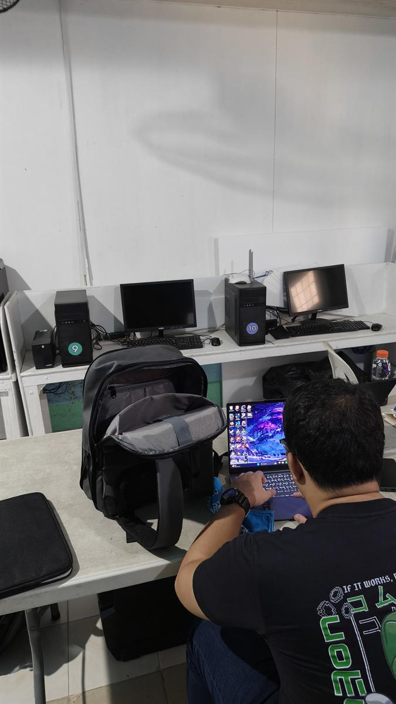
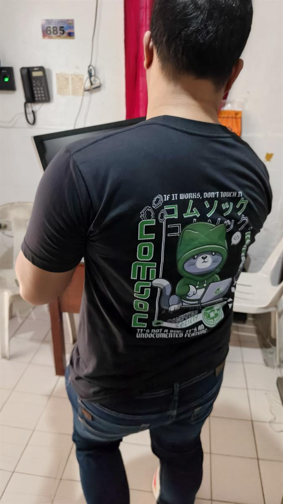
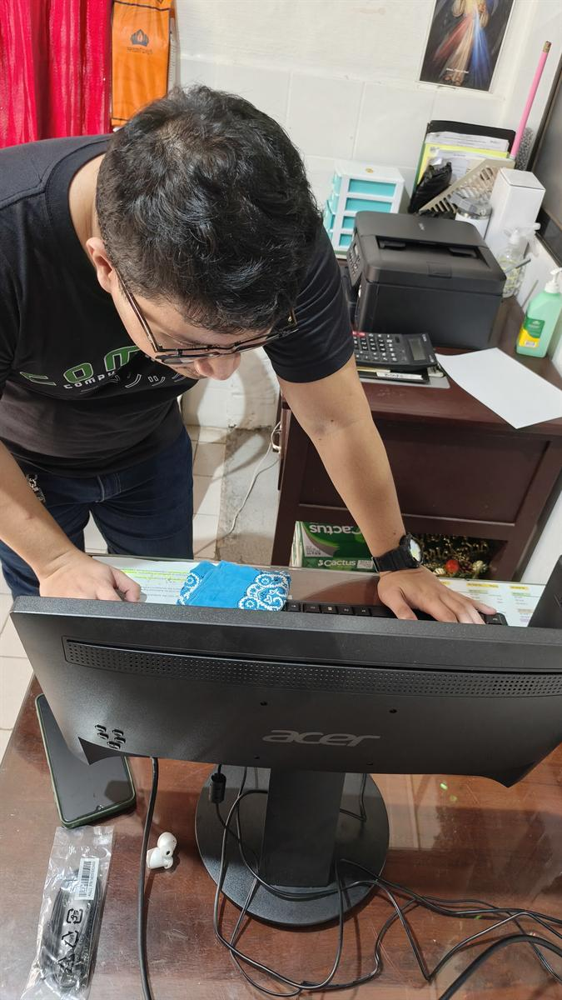
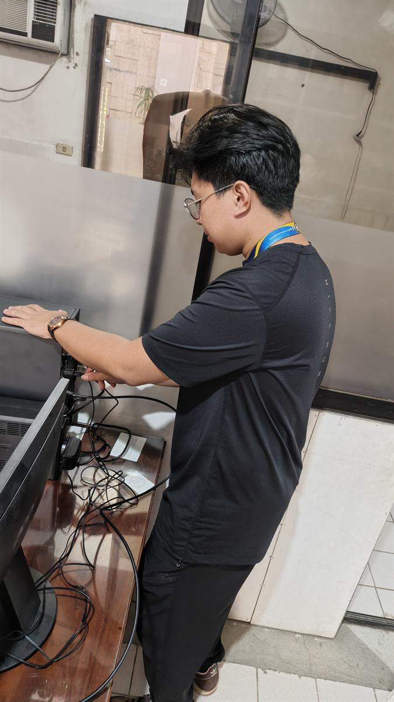

Day One
The whole thing started with one locked computer.
The first order of the day was a long ride south. A school was waiting for us. So was a problem. The one computer that would run everything was locked, and the password was gone. So was the man who knew it.

We didn't have the key. But one of us had a flash drive. On the first day, that turned out to be enough.


So we started from nothing. We carried the machine to a better corner of the room, wiped it clean, and gave it a new password of its own.


Then we connected the cables and waited for the light. A fan turned. A screen woke up. In a small office in the province, a school quietly came online.